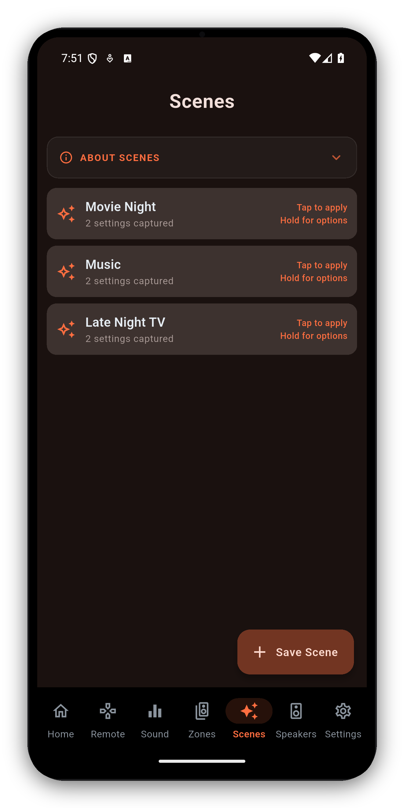
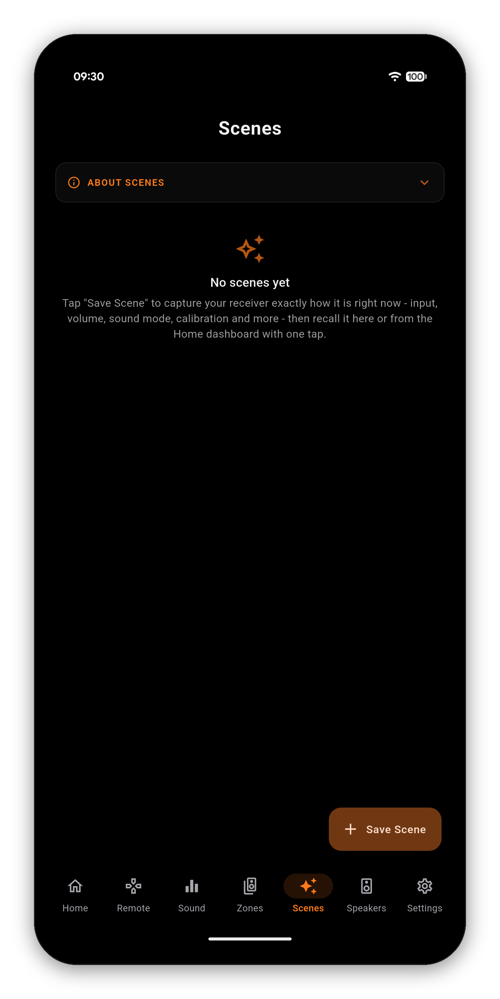
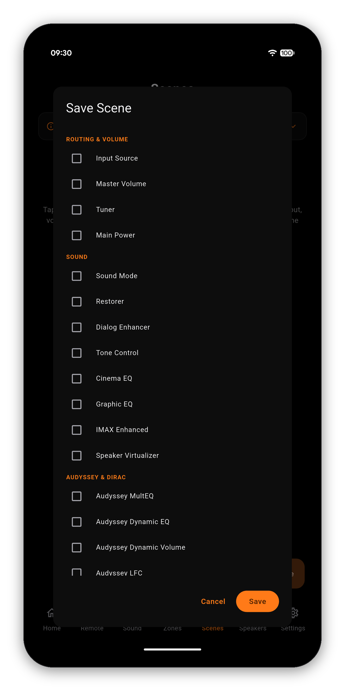

Capture your Denon or Marantz receiver exactly how you like it - and bring it all back instantly. Movie night, gaming, late-night listening: each its own Scene, one tap away. It's the killer feature no official app has.



A single Scene can snapshot any of the following. Recall replays only the settings you captured, so a "late-night" Scene can change just the volume and Dynamic EQ while leaving everything else alone.
Main-zone power state, input source and master volume - a Scene can even switch the receiver on as it loads.
Sound mode, tone, Cinema EQ, Graphic EQ, center spread/level, speaker virtualizer.
MultEQ, Dynamic EQ, Dynamic Volume, LFC, and the active Dirac Live slot.
Speaker preset plus per-channel and subwoofer levels.
Zone 2 and Zone 3 power, input and volume.
Eco, sleep timer, dimmer, HDMI audio out, and the tuner station.
Long-press any Scene for the four things you will actually want:
To put a Scene on your Android home screen, add the AVR Maestro Scene widget from your launcher's widget list and pick the Scene. Tapping it fires the Scene without opening the app.
A Scene is not one command. It is a sequence, sent in a deliberate order and paced so the receiver can keep up, which is why recall takes a moment rather than happening instantly.
Scenes, sound modes, Audyssey and Dirac, multi-zone and more - in one fast app. One-time purchase, no ads, no subscriptions.